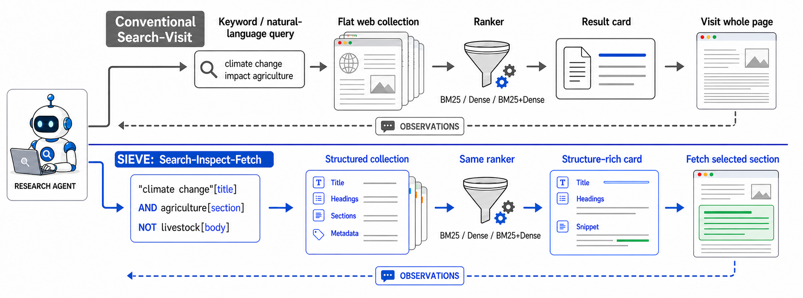
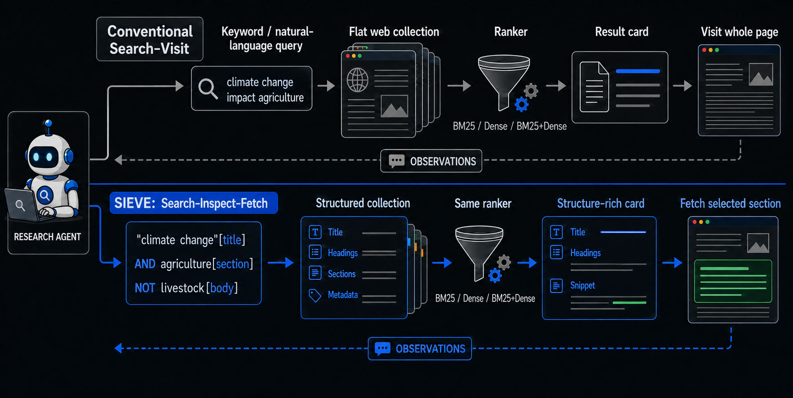
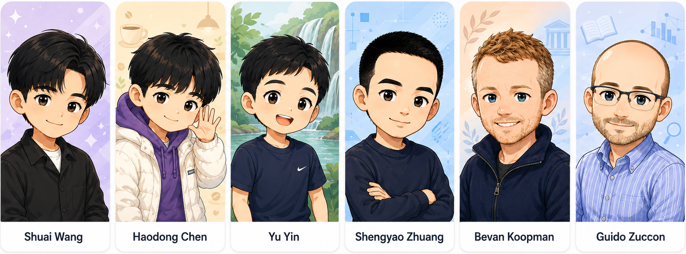
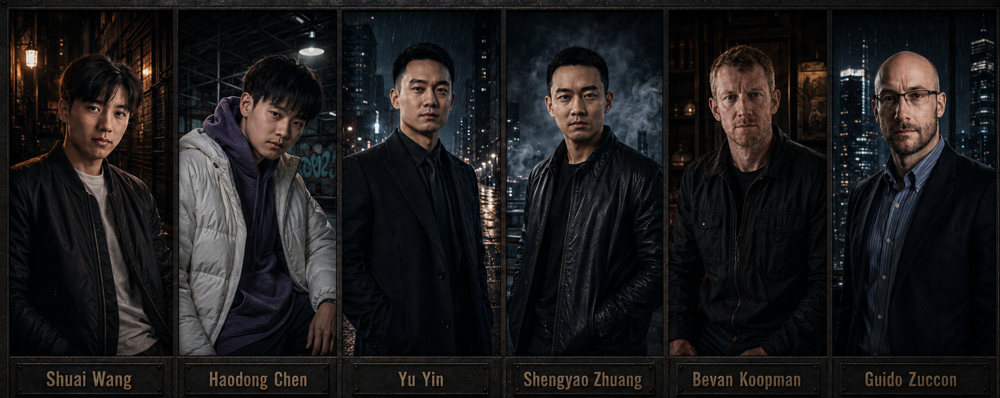

A Boolean search–inspect–fetch method for deep-search agents: the agent skims before it reads. Sieve is one setting of the SkimSearchAgent library.
Against the BM25 Search–Visit baseline under identical budgets (k=5, 12,000-token reads, 100 steps). Skimming structure before reading is not an accuracy-for-cost trade: on all three collections it wins on both axes.
| collection | accuracy (baseline → Sieve) | tokens / episode |
|---|---|---|
| HotpotQA (7,343) | 43.7 → 45.3 EM | 19.9k → 13.9k (−30.4%) |
| MuSiQue (2,409) | 26.1 → 29.2 EM | 43.0k → 21.3k (−50.6%) |
| BrowseComp-Plus (830) | 34.7 → 37.2 judge | 68.1k → 46.0k (−32.4%) |
The effect transfers across agent backbones (Qwen-AgentWorld, OpenResearcher), with the largest savings where the baseline burns the most context. Full tables, ablations and statistics are in the paper.
A deep-research agent that reads whole documents burns its context window on text it never needed. Sieve composes four separable stages on top of one shared agent loop, so the agent narrows before it spends.
The agent writes a BQL Boolean query: field-scoped terms (title, section, date…) with AND/OR/NOT, phrases and prefixes that carve the corpus down to candidates.
Candidates are ranked by relevance, with graceful soft fallback when a strict filter over-narrows to zero hits.
Each result is a structure-rich card: title, section headings, matched fields, a query-biased snippet. Enough to judge a document without reading it.
The agent reads only the named section it chose from the card, a slice rather than the whole document, and answers from grounded evidence.




@misc{wang2026sieve,
title = {Search, Inspect, Fetch: Exploiting Boolean Retrieval
for Deep-Research Agents},
author = {Wang, Shuai and Chen, Haodong and Yin, Yu and
Zhuang, Shengyao and Koopman, Bevan and Zuccon, Guido},
year = {2026},
eprint = {2608.02751},
archivePrefix = {arXiv},
primaryClass = {cs.IR},
url = {https://arxiv.org/abs/2608.02751}
}